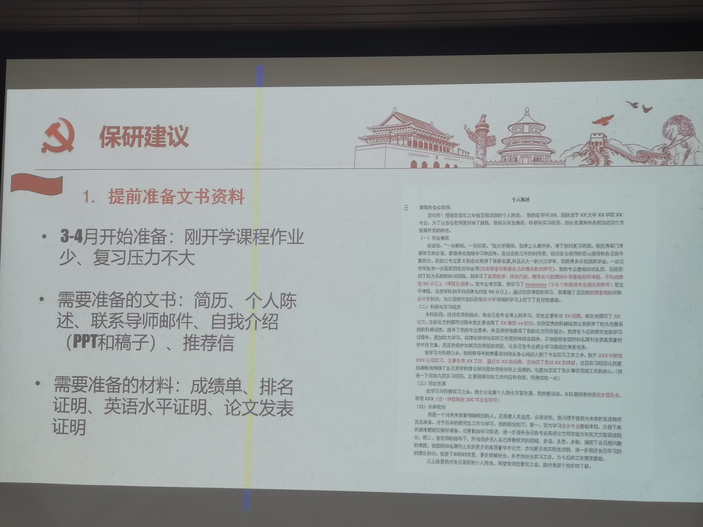

sysu-lecture-241113
保研分享会笔记
2024/11/13
【保研经验分享会】
【本科生第二党支部将于今天中午12:30】在【学院楼A101】举办面向大二大三同学的保研经验分享会，由支部四位保研（清深人工智能/人大政治经济学/中大计算机）的同学为大家分享保研政策、流程、经历和备考建议等，并邀请了学院研究生秘书李湄老师为大家解答学院研究生招生和培养的相关问题
推免
1
2
必修加专选的排名必须在年级前50%
徐同学
人大政治经济学
面试：
谈吐得体，声音大，自我介绍熟练
自信程度很大程度影响分数
学校夏令营之间的时间冲突需要权衡
熊同学
中大计算机
保研边缘人
计院夏令营
上机考试
搞清楚有哪些IDE
10道算法题
面试
问一些高数线代操作系统网络等问题
也有轻松的问题：在志愿活动中的感受、运动的好处
出国：算4分绩点，成绩超过85分的算满分
保研之后就不能去申请其他学校了
唐同学
推免第48名（保研线47）
中大：工程硕博
上机考试主要都是力扣中等题
工程硕博
中大的无定向
对于已经稳保研的建议
提升竞赛、项目、论文
提前找好导致
发掘和验证研究方向
面试准备：
课程成绩+奖项+项目+科研+社会服务
提前一周准备面试
越主动越多选择
李同学
清深（非系统结构方向）
夏令营和预推免
每个考生可以填3个平行志愿
最多收到3个offer，进行反选
保研建议

准备通用模板
面试以基础知识和概念为主
清深
冲更好的学校，科研项目是必不可少的
清深夏令营流程：
一开始宣讲
分实验室考核，他所在的实验室笔试
统一进行面试
今年(2021级)中大去外校的特别少，一个清华本部，2个清华深研院，无北大
论文在投的也能表明能力
系统结构的和ai比较相关，其他领域非AI的成果也被认可
推荐信只是一个流程
笔试：数学 概率论线代 专业知识 ai基础 很少有算法
那个实验室简单
过了笔试才能参加面试
面试：英语 读翻译英文材料 ai基础知识
50%优营率（铁offer）
感觉绩点更重要
刚才几位去清华/清深的都不是2%
提前联系导师 清深是学院主导
套磁老师：可以做一点任务，最开始都是以学习为主
清深都有哪些人面试？
- 3%绩点无科研，套磁
- 6%绩点，一篇1类一作，发明专利，一篇三作再投
- （武大）11%绩点，论文、专利、软件、13项大奖
sysu-lecture-241113
https://blog.algorithmpark.xyz/2024/11/13/baoyan/sysu-lecture-241113/index/